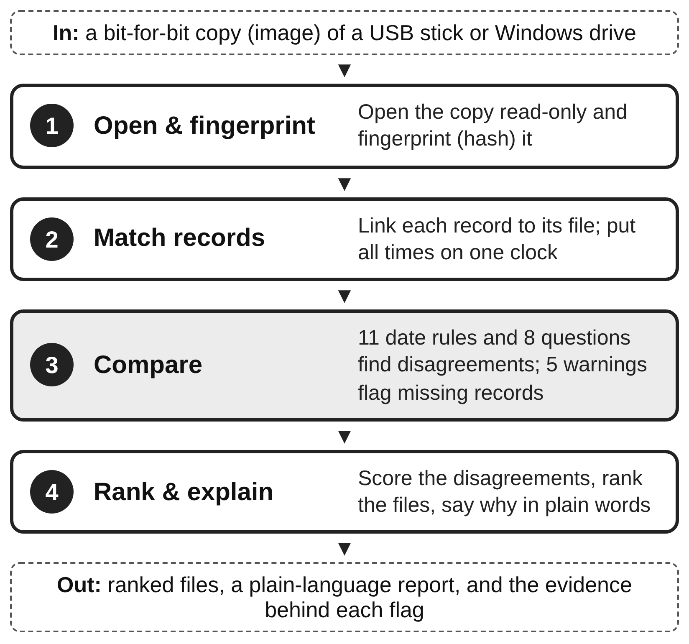
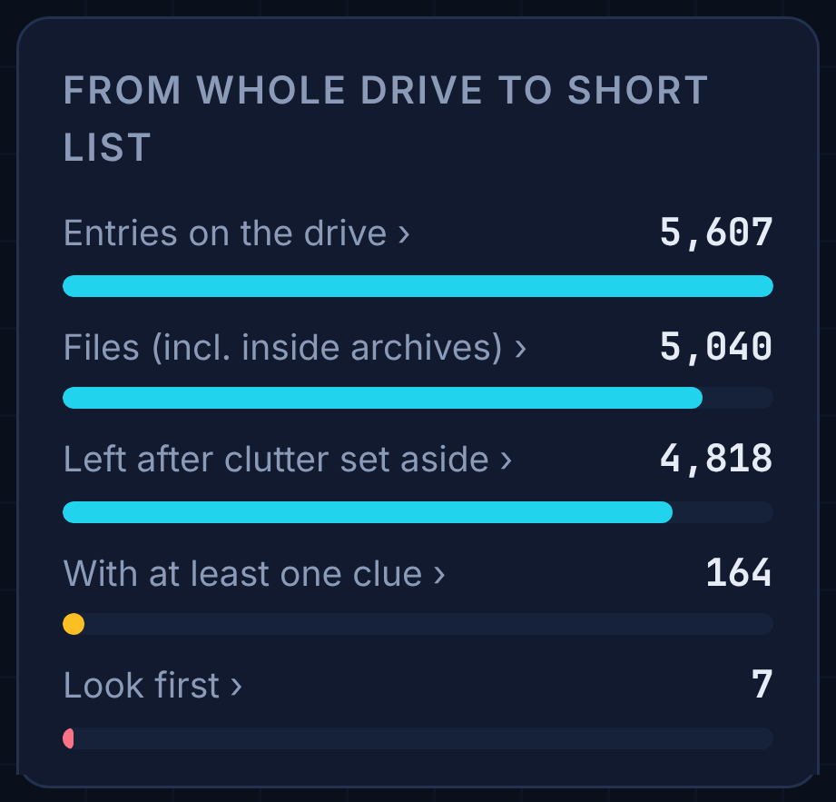

The problem
Hiding evidence is cheap: any program can rewrite a file's visible dates (timestomping), rename a photo so it sits among system binaries, or tuck one file inside another. Hiding it well is hard, because Windows and NTFS record the same facts in several independent places: the $STANDARD_INFORMATION and $FILE_NAME timestamps in the MFT, the USN change journal, LNK shortcut files, Prefetch and the event logs. EnCase and FTK display all of these, but leave it to the examiner to notice when two of them conflict, and any single automated check is noisy.
What I built
- Direct image parsing. My own FAT and NTFS readers walk raw images (
.img,.dd,.raw) read-only, and fingerprint every input with SHA-256 so each result traces back to the original copy. - First look: eight questions asked of every file: disguised (name vs. magic bytes), data hidden after the end marker, password-locked, password written down nearby, odd one out in its folder, never referenced, archive of personal files, and written at an unusual time.
- Windows date checks: rules R1 to R11 and warnings S1 to S5 that cross-check MFT, $J, LNK, Prefetch and event-log times. They run straight from an NTFS image or from Eric Zimmerman's MFTECmd, PECmd, LECmd and EvtxECmd CSVs.
- Scoring that combines evidence. A file rises only when several independent checks disagree about it, and a missing or cleared record counts as a clue rather than being skipped.
- Reports a non-specialist can read. One self-contained HTML briefing per case (overview, ranked leads, hex map of the boot sector, keys and locks, timeline), plus CSV and JSON for an examiner.
- Two front ends, one answer. A JavaScript port runs the whole pipeline in a single offline web page. The test suite runs both engines on fixtures, seeded stress drives and fuzzed inputs and requires every result to match field by field.

Evaluation
I tested ADS against my own manual EnCase and FTK examinations of the course's two lab images, using my findings as the answer key.
- Project 1 (development case, FAT16): all seven evidence files are on the list, six in the top ten. It named a JPEG hidden after the end of another photo straight from the RAR header behind it, a find that took me a TA hint and a byte search by hand.
- Project 2 (held-out, NTFS): the checks were locked before I examined the image. ADS listed 7 of the 16 evidence files among 4,818, five of them in its top ten.
- Combination vs. single checks: on Project 1 no single check caught more than four of the seven files, and the broad checks lost clearly to the combined score.
Limits, stated plainly: the date rules target changes made from inside a running Windows system; editing a raw disk offline bypasses Windows' own logs and is out of scope. The paper linked here is the November 2026 draft; the final version adds the full results and discussion.

Try it
- Open Run it in your browser (above) in Chrome, Edge or Firefox. Everything runs on your computer; the image is never uploaded or changed.
- No drive image at hand? Use the Sample drive (above), a made-up drive with no real evidence, and drop it on the page.
- Watch the analysis, then open the First look and Date checks tabs. Everything (.zip) saves the same files the command line writes.
Or unzip Download the tool and run the Python version (Python 3, nothing else to install):
python3 -m ads IMAGE.img # first-look report python3 -m ads gui # point-and-click window python3 -m unittest discover -s tests -v # test suite